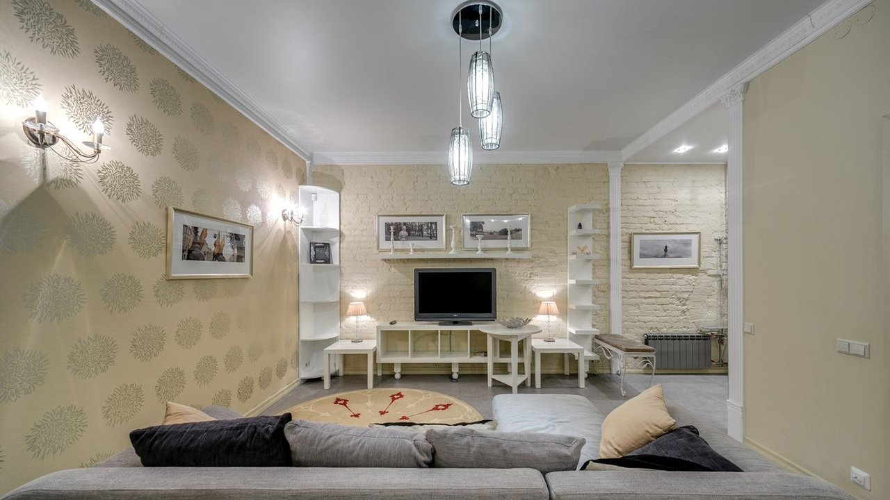

Tarifs 2026
Prix d'un peintre en Normandie en 2026 : ce qui fait varier la facture

Comme pour de nombreux métiers du bâtiment, le prix d'un peintre en Normandie a continué d'évoluer ces dernières années. Voici un état des lieux pour préparer sereinement un budget travaux en 2026.
Les facteurs qui influencent les tarifs en 2026
- Le coût des matériaux : peintures, enduits et sous-couches ont suivi une hausse progressive liée aux coûts de production et de transport des dernières années.
- La main d'œuvre qualifiée : les artisans formés aux spécificités du bâti ancien normand (colombages, enduits à la chaux) restent recherchés, ce qui maintient une tension sur les tarifs de cette expertise.
- La demande saisonnière : les devis demandés au printemps et en été, période privilégiée pour les travaux de façade, sont généralement planifiés plusieurs semaines à l'avance.
Budget indicatif pour 2026
À titre de repère général pour un logement standard en Normandie :
- Rafraîchissement peinture d'une pièce (15 m² environ) : à partir de 400 à 700 € selon l'état des murs.
- Peinture complète d'un logement type T3/T4 : généralement entre 3 000 et 6 000 € selon finitions et préparation.
- Ravalement de façade complet : variable selon la surface et le traitement nécessaire, souvent entre 4 000 et 12 000 € pour une maison individuelle.
Pour un détail plus précis selon le type de prestation, consultez notre grille dédiée sur le tarif d'un peintre dans l'Eure.
Comment optimiser son budget sans sacrifier la qualité
- Grouper plusieurs pièces ou prestations dans un même chantier pour limiter les coûts de déplacement et de mise en place.
- Anticiper les travaux de façade hors haute saison pour plus de disponibilité côté artisan.
- Privilégier une peinture de qualité intermédiaire à bonne tenue plutôt qu'un premier prix à refaire plus tôt.
- Demander systématiquement un devis détaillé pour comparer les prestations, pas seulement les prix globaux.
Un devis actualisé, gratuitement
Les tarifs évoluant d'une année sur l'autre, la meilleure façon d'avoir un chiffrage fiable pour 2026 reste de demander un devis gratuit adapté à votre projet, sans engagement.
Un projet de peinture en Normandie ?
Demander mon devis gratuit